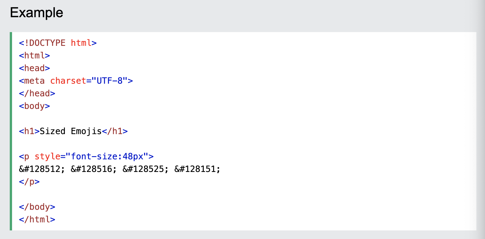

This week we learned about flexboxes. Flexboxes are something that I am honestly not very good at. BUT I did find that MDN had a very helpful page on the Basic concepts of flexbox. I referred to that page quite freqently when working on the tasks for Tuesday's lab. Task two was the one that my partner and I got stuck on. We found it difficult to get the images in that stairstep pattern. But it's okay because we tried our best.
On Thursday, we still worked with flexboxes. For one of our tasks, we had to create a photo masonry with a sticky sidebar. It was really fun to do. The sticky sidebar was something I was familiar with but the photo masonry was not. We also got to insert emojis into the sidebar! I've never put emojis in a webpage before so that was really cool! I didn't know how I was supposed to insert them but this code snippet from w3schools was very useful in figuring out how to do so: 